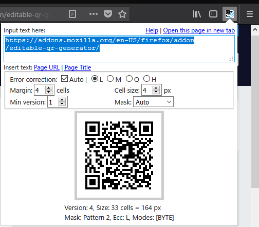
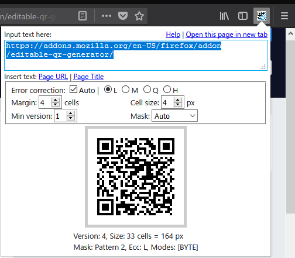

Editable QR Generator
Thank you for your downloading.
This is editable and configurable offline QR Code generator Web extension addon.
Features
- Editable: You can generate QR Code from any text.
- Configurable: You can configure error correction level, size, and mask pattern etc.
- Offline: QR Code is generated offline. This addon never generates web connection.
- Minimal permissions: This addon only requires "activeTab" permissions to get the URL and the title of the current page. Please verify the manifest.json.
- Open Source: Source code is hosted at https://github.com/xyx-is/Editable-QR-Generator. Your contribution is welcome.
- UTF-8: Support UTF-8 encoding. This means you can use multibyte characters, Emoji etc.
Usage
This addon creates a toolbar button with a popup page.
You can generate QR Code by entering any text in the textarea on the head of the popup.
 


Insert the URL and the title of the current page
By clicking the links beside "Insert page", you can insert the URL and the title of the current page into the textarea.
- "Page URL" link
- Insert opening page URL into the textarea.
- "Page Title" link
- Insert opening page title into the textarea.
Configure QR Code setting

By changing form inputs in the fieldset middle of the popup, you can Configure QR Code setting.
You can check the description in the tooltips of the form inputs.
- Error correction
-
You can select error correction level from L(Low), M(Medium), Q(Quartile), and H(High).
If you check "Auto" checkbox, error correction level is automatically boosted unless it increases QR Code size.
- Margin
- You can set margin cell size. default is 4.
- Cell size
- You can set cell size in pixels.
- Min version
- You can set minimum version size of QR code. QR code with larger version size has more cells. QR code version size varies from 1 to 40.
- Mask
- You can select the mask pattern.
Open QR Code in a new tab and save

By clicking the QR Code canvas, you can Open the QR Code image in a new tab.
You can save the QR Code in the new tab.
Also, if you are using Firefox, you can directly save the QR Code image by right clicking the the QR Code canvas.
Open popup in new tab


If you feel it is difficult to edit in the popup, click the 'Open this page in new tab' to open the popup in a new tab.
Bug Report
This addon is maintained at GitHub. Please report bug at Issues. Thank you.
License
MIT License. Third-party libraries are listed below.
Third-party libraries
This project uses following Third-party libraries.
Notice
QR Code is a registered trademark of DENSO WAVE INCORPORATED.